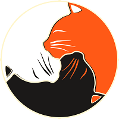

CatLife
CatLife merupakan tempat yang tepat bagi Anda yang memerlukan jasa perawatan dan penitipan kucing kesayangan Anda.
FasilitasCatLife merupakan tempat yang tepat bagi Anda yang memerlukan jasa perawatan dan penitipan kucing kesayangan Anda.
Fasilitas
Kucing domestik mungkin menjadi jenis kucing yang paling banyak ditemui. Jenis kucing domestik lebih populer dikenal dengan nama kucing kampung. Kucing kampung juga jenis kucing yang mudah untuk dipelihara. Kucing kampung juga tidak memerlukan perawatan khusus layaknya kucing ras lain yang mempunyai karakteristik khas. Jadi kamu tidak repot-repot mempersiapkan banyak hal untuk jenis kucing ini.
Kucing Anggora memiliki ciri khas pada bentuk kepalanya yang segitiga berbulu lebat menyerupai singa dengan hidung yang lebih mancung dari kucing jenis lainnya. Leher dengan bulu yang panjang juga jadi ciri khas yang tidak bisa dialihkan dari Kucing Anggora. Itu lah yang membuat kucing jenis ini sangat menggemaskan.
Kucing Siam merupakan jenis kucing dengan ras oriental yang populer di Thailand dan paling terkenal dari semua jenis kucing pedigree. Di negara asalnya, Kucing Siam dikenal sebagai “Royal Cat of Siam”. Kucing Siam memiliki 3 jenis, yakni Kucing Siam klasik, Kucing Siam Tradisional, dan Kucing Siam Modern. Kucing Jenis ini memiliki karakteristik bentuk tubuh yang ramping, ekor panjang, mata biru, dan bulunya pendek bertitik gelap pada muka, telinga, ekor, dan kakinya.
Jenis kucing ini memiliki kebiasaan yang lemah lembut, ramah, santai, periang, dan cerdas. Kucing persia memiliki kepala dan dahi yang bulat lebar dan telinga kecil yang ujungnya membulat. Bentuk ekornya pun pendek dan kaki yang pendek. Untuk merawat kucing ini membutuhkan perlakuan khusus karena bulunya yang panjang dan lebat. Kamu harus rajin menyisir dan menyikat rambut mereka setiap hari agar tidak kusut. Selain itu, kucing ini juga sering muncul noda karena air mata. Jadi, harus rajin membersihkan mata mereka agar mencegah masalah kulit yang serius pada si kucing.
Kucing Sphynx adalah salah satu jenis kucing yang unik karena hampir tidak memiliki bulu sama sekali. Namun sebenarnya Kucing Sphynx masih memiliki bulu yang sangat pendek dan hampir menyerupai kulit. Uniknya lagi Kucing Sphynx juga menjadi satu-satunya jenis kucing yang memiliki kelenjar keringat. Kucing ini bertubuh ramping dengan telinga yang berbentuk segitiga, kulit kening yang berkerut, dan dada yang kuat. Bentuk ekornya kecil dan panjang dan beberapa kucing jenis ini memiliki kumis. Kucing ini harus dimandikan secara rutin untuk menjaga bulunya agar tetap sehat karena kulit Kucing Sphynx harus tetap sejuk dengan kelenjar keringat yang dimilikinya.
Kucing Bengal merupakan jenis kucing yang unik karena menjadi satu-satunya jenis kucing yang berbintik seperti keturunannya langsung. Sifatnya yang gaduh, aktif, dan senang bermain akan membuat pemiliknya kewalahan. Jadi jika kamu tertarik memelihara kucing jenis ini harus siap-siap menangani tingkah lakunya. Kucing jenis ini bahkan sangat pintar dan mudah diajari atas perintah.